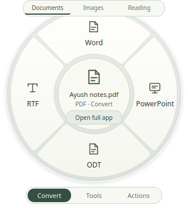
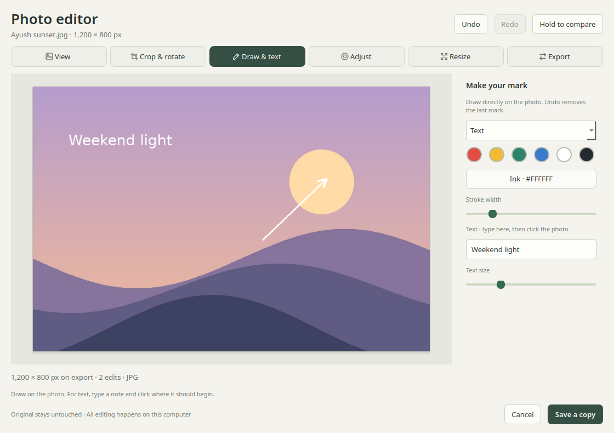

Photos, tidied up.
Convert JPEG, PNG, WebP and AVIF. Crop, resize, rotate, or add a note and an arrow.
Everyday file tools · Ubuntu beta
Convert a photo. Fix a PDF. Trim a clip.
Filewink keeps the everyday stuff close, and the files on your
computer.
0.5.4 beta 1 Ubuntu 24.04 Intel / AMD 64-bit

The little jobs add up
Reach for the wheel for a quick change.
Open the full app for
the edits that need a little more room.

Convert JPEG, PNG, WebP and AVIF. Crop, resize, rotate, or add a note and an arrow.
Merge, split and rearrange pages. Remove a page, compress a file, or export text and pictures.
Trim the start, end or a section in the middle. Join the parts you want, then compress and export.
Read text with offline OCR. Review the result before copying it or saving it to a file.
A few honest limits: PDF-to-document exports can change the layout. PowerPoint exports use image slides. OCR needs a review. HEIC, editing existing PDF text and multitrack video editing aren’t included.
Make a little room for Filewink
Free to use. No sign-up.
This is an early beta—keep your
originals.
24.04 · Intel / AMD 64-bit
The app, its editors and quick actions. Install the .deb directly. Ubuntu installs the system packages it needs.
Download .deb64-bit installer & portable ZIP
The Windows build is being tested. Public downloads will appear here once the release checks are complete.
Other Linux distributions, older Ubuntu releases, ARM and macOS aren’t supported yet. There is no AppImage, Flatpak, Snap or RPM release.
From download to done
Download the app, then install it from its folder.
Ubuntu
handles the system packages it needs.
Choose the .deb for Ubuntu 24.04 on an Intel or AMD 64-bit computer. A new Ubuntu 26.04 package is being checked.
Download the appOpen a terminal in the folder where you saved the app. Run the command shown here.
Open Filewink from Applications, or right-click a file and choose Open With → Filewink.
sudo apt install ./filewink-0.5.4-beta1-ubuntu-amd64.debInternet is needed for missing Ubuntu packages. No Python setup or source checkout required. LibreOffice installs with normal APT recommendations for Office conversions.
The update feed is waiting for the domain’s HTTPS setup to be repaired. Use the direct app install above for now. Keep HTTPS and signature checks enabled.
The repository details and APT setup package remain available. The direct app install does not add an update source.
File processing happens locally. You don’t upload your files or create an account. Installing the app and downloading missing dependencies need an internet connection.
PDF-to-document exports can change the original layout, and PDF-to-PowerPoint creates slides made from page images. Keep original signed PDFs: editing a signed document can affect its signature. Filewink does not edit existing PDF text.
Yes. The application and its dependencies retain their individual licences, available in the app under About → Third-party licences. A voluntary “Buy me a cookie” support link will be added when it’s ready.
Open a GitHub issue with your Ubuntu version, what you tried and what happened. A screenshot or small sample can help. Leave private files, passwords and personal information out of public reports.
If you enabled gestures, remove their integration before uninstalling. Quit Filewink, then run:
filewink-integrate --uninstall
sudo apt remove filewink
sudo apt purge filewink-archive-keyringThe last command is only needed if you set up APT updates. Your originals, generated files and settings are kept. To disable just the update source while keeping the app, run only the last command.
A small app, still growing
Filewink is made by Ayush Awasthi. Useful feedback helps make the next version better for everyone.